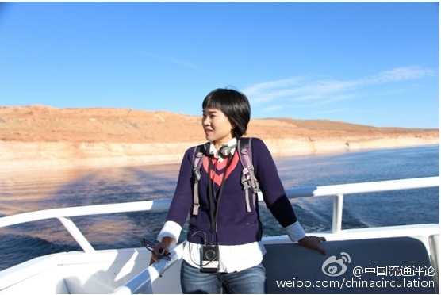

机构介绍
简介
机构设置
研究方向
专家团队
科研资讯
流通所新闻
基地资讯
媒体报道
科学研究
课题研究
课题招标
成果影响
科研成果
学术论文
著作
研究报告
学术交流
来访交流
调研考察
主办年会
流通论坛
咨询培训
咨询顾问
企业策划
专家培训
智库建设
名家百人讲座
智库动态
机构介绍
机构介绍
机构简介
机构设置
研究方向
专家团队
专栏题目
2008“广东流通业三十年回顾与展望”高峰论坛
2005“珠江三角洲经济发展与流通现代化”研讨会
2004广东流通产业竞争力高峰论坛
2007“广东省流通业转型问题”学术研讨会
2005“珠江三角洲经济发展与流通现代化”研讨会
最新热门
肖怡：“新零售”的提出
彭雷清教授申报课题获教
广东财经大学流通经济研究所与湖北康华智慧物流园成立商贸物流产学研基地
王先庆：带有体验性的商
王先庆：产业轻化转型 引领区域创新
最新推荐
广东省商业经济学会招聘
重磅：“华南商界
王先庆课题组研究报告获
流通所承办首届华南现代物流学术年会
流通所承办首届华
研究团队文章
广东省商业经济学会招聘
重磅：“华南商界
王先庆课题组研究报告获
流通所承办首届华南现代物流学术年会
流通所承办首届华
热门人物
韦琦
副教授
韦琦，女，广西鹿寨人，博士，广东财经大学工商管理学院副教授，中山大学中国第三产业研究中心特约研究员，广州市现代物流与电子商务发展研究基地兼职研究员。主要从事物流与供应链管理、服务经济与管理等的教学科研工作。主持完成教育部人文社科青年课题1项，主要参与国家及省部级课题多项、市（区）政府规划课题多项，公开发表论文20余篇，主编和参编教材3部。曾获广东社会科学年会优秀论文一等奖和中国物流学术年会优秀论文三等奖。

阳明明
博士
阳明明，女，湖南安仁县人，汉族，广东财经大学工商管理学院教师，管理科学与工程博士，广州市现代物流与电子商务发展研究基地兼职研究员。主要研究方向为交通枢纽与区域物流增长。
郭佳
博士
郭佳，河北省唐山人，广东财经大学工商管理学院物流管理系讲师，广州市现代物流与电子商务发展研究基地兼职研究员。毕业于中山大学岭南学院,获管理学博士学位。曾在《中国管理科学》、《系统工程》、《南方经济》等国内核心期刊发表论文，主要进行电子商务与供应链管理、按订单生产系统优化、制造企业ERP应用等方面的研究。
李柏勋
副教授
李柏勋（1981-），广东佛山人，获管理学博士学位，现任广东财经大学工商管理学院副教授，广州市现代物流与电子商务发展研究基地兼职研究员。是广东财经大学第一位“南岭学者”青年拔尖人才，也是校内培养选聘的第一位“南岭学者”。2014年入选广东高校“优秀青年教师培养计划”、第八批广东高校“千百十人才培养工程”校级培养对象。在A类I级期刊发表论文3篇，主持国家自然科学基金项目、教育部人文社科项目、广东省自然科学基金项目多项。